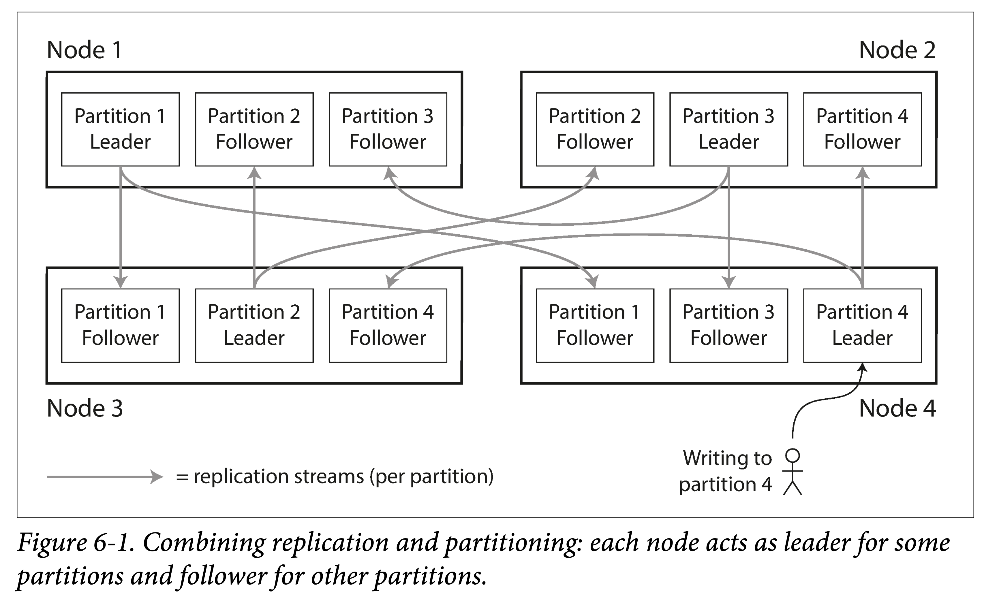
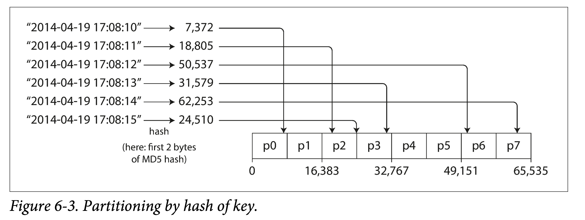
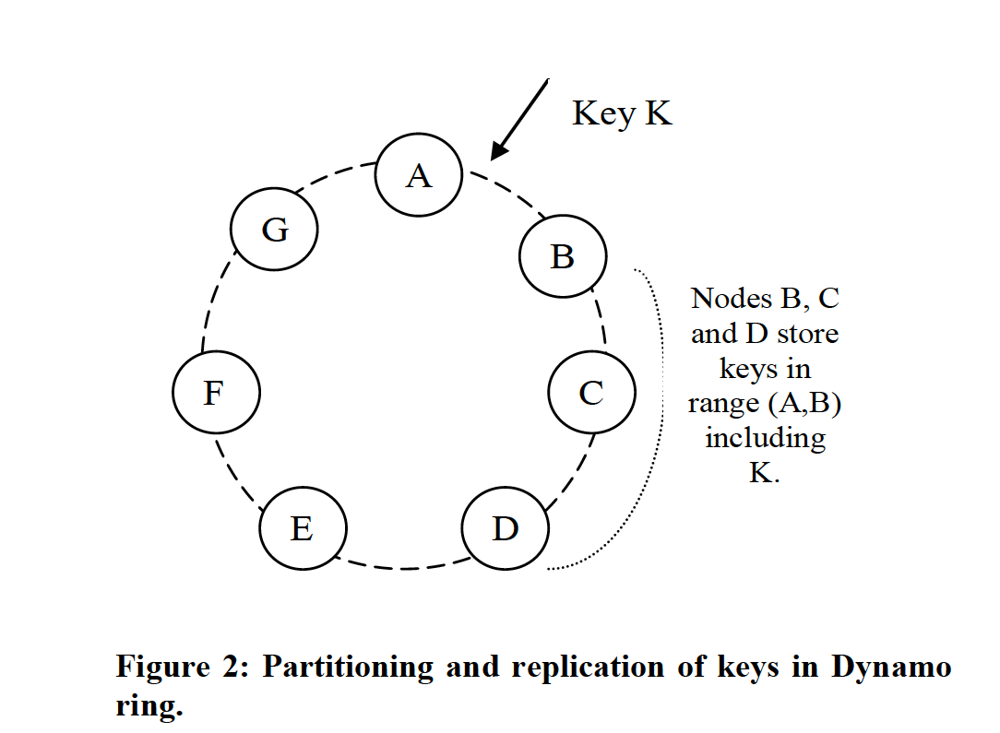
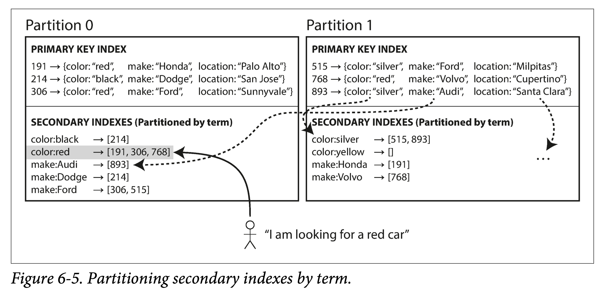
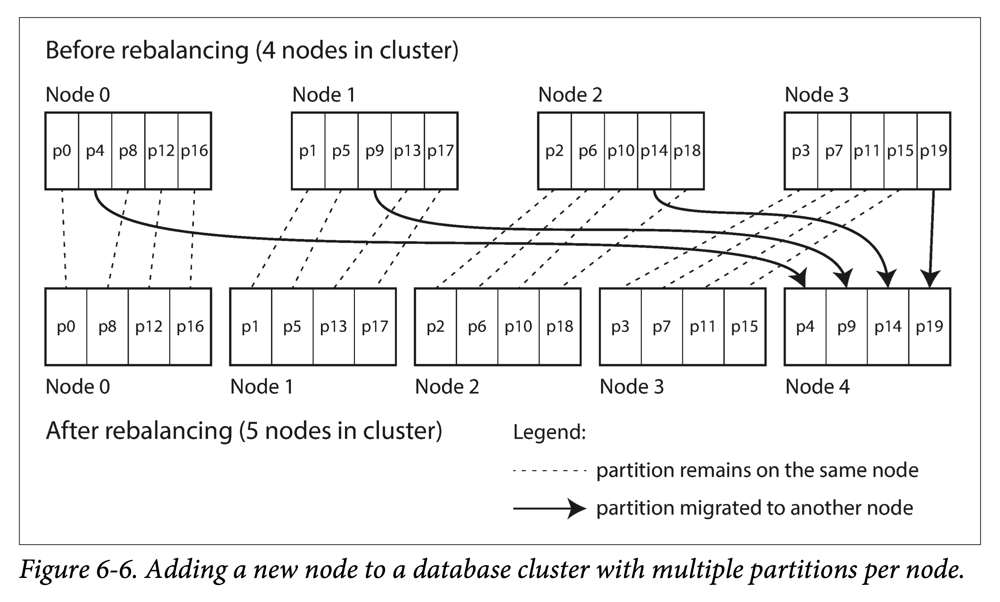
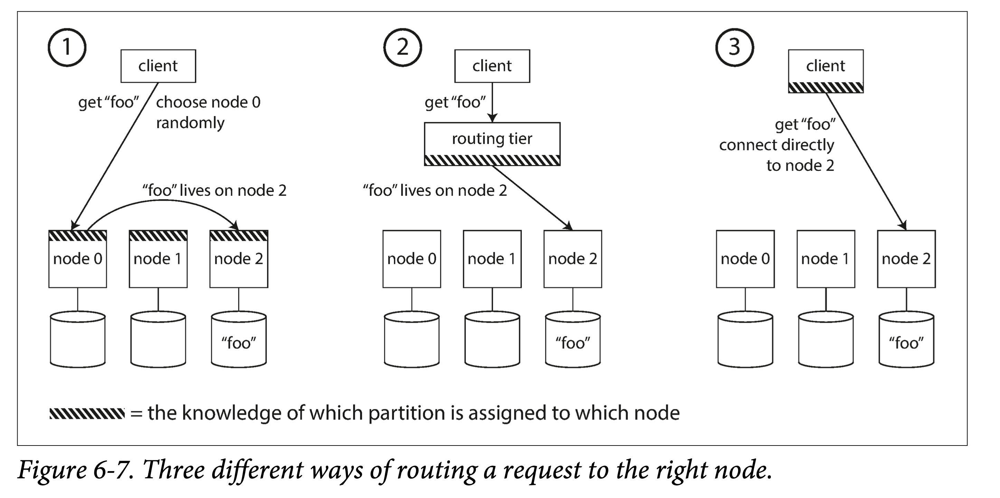
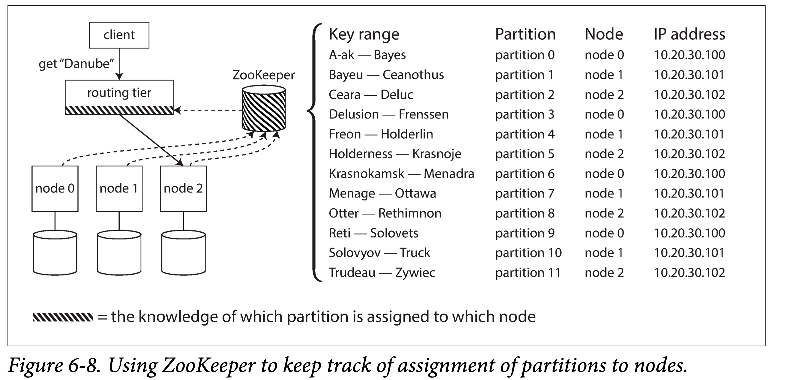

DDIA 阅读笔记第六章：分片
摘要
第六章讨论了分片这一技术，通过将数据将大数据集拆分为多个小数据集，存储在多个节点上，来达到提高吞吐的效果。
什么是分片
- 分片（Partition），也叫分片（sharding）：将大数据集拆分为多个小数据集（分片），存储在不共享集群的多个节点上，利用多机处理负载，提高吞吐、可扩展性。
- 对于在单个分片上运行的查询，每个节点可以独立执行对自己的查询，因此可以通过添加更多的节点来扩大查询吞吐量。
- 复杂的查询可能会跨越多个节点并行处理，这也带来了新的困难。
- 复制（Replication）：同一份数据使用多机存储多副本，避免单点故障、提高可扩展性和可用性。
二者的区别：巨大数据集无法存储在单机上，复制技术就无效了，必须先分片。
术语澄清 上文中的分片 (partition) 是约定俗成的叫法，但还有其他叫法：
- 在 MongoDB,Elasticsearch 和 Solr Cloud 中被称为分片 (shard)，
- 在 HBase 中称之为 ** 区域 (Region)
- Bigtable 中则是 表块（tablet）
- Cassandra 和 Riak 中是 ** 虚节点（vnode)
- Couchbase 中叫做虚桶 (vBucket)
这里的 partiton 有时也被译为分片，但这容易与网络分片（[Network partition]）混淆，因此个人建议用分片这个名字。
通常情况下：
- 每条记录属于且仅属于一个分片
- 每个分片都是自己的小型数据库，尽管数据库可能支持同时进行多个分片的操作。
分片主要是为了可扩展性。不同的分片可以放在中的不同节点上。因此，大数据集可以分布在多个磁盘上，并且查询负载可以分布在多个处理器上。
在本章中，讨论：
- 大型数据集切分的不同方法，并观察索引如何与分片配合
- 分片重平衡（Rebalancing）：如果想要添加或删除群集中的节点，则必须进行重平衡
- 请求路由：数据库如何将请求路由到正确的分片并执行查询
分片与复制结合
分片通常与复制结合使用，使得每个分片的副本存储在多个节点上。 这意味着，即使每条记录属于一个分片，它仍然可以存储在多个不同的节点上以获得容错能力。
一个节点可能存储多个分片。 如果使用主从复制模型，则分片和复制的组合如图 6-1 所示。
- 每个分片中：存在一个节点为主副本，其他节点为从副本。
- 每个节点中：既有主副本分片，又有从副本分片。
数据库复制的所有内容同样适用于分片的复制。 大多数情况下，分片方案的选择与复制方案的选择是独立的，为简单起见，本章中将忽略复制。

图 6-1 组合使用复制和分片：每个节点充当某些分片的主副本，其他分片充当从副本
key-value 数据的分片
分片目标是将数据和查询负载均匀分布在各个节点上，成倍提高吞吐：
- 如果每个节点公平分享数据和负载，那么理论上 10 个节点应该能够处理 10 倍的数据量和 10 倍的单个节点的读写吞吐量（暂时忽略复制）。
如果分片是不公平的，一些分片比其他分片有更多的数据或查询，称之为偏斜（skew）。
- 数据偏斜会降低分片效率。在极端的情况下，所有的负载可能压在一个分片上，其余 9 个节点空闲的，瓶颈落在这一个繁忙的节点上。
- 不均衡导致的高负载的分片被称为热点（hot spot）。
根据键范围分片
将键的范围（从最小值到最大值）拆成多个区间，每个区间对应一个分片。
- 可以很快确定 key 在哪个分片上（查找包含它的区间）
- 如果还知道分片所在的节点，那么可以直接向相应的节点发出请求
为了使分片数据均匀分布，需要按照数据的分布，动态调整分片的边界（对键范围等分通常不能使分片数据均匀）
- 可以由管理员手动完成
- 也可以自动进行，参见重平衡
在分片内部，键可以按序存储，这使得可以支持高效的范围查询（Rang Query）。例如某个应用是保存传感器数据，并将时间戳作为键进行分片，则可轻松获取一段时间内（起始到终止区间内）的数据。
但坏处在于，数据访问模式容易造成热点。例如某段范围的数据读写频率远高于其他数据。
- 仍以传感器数据存储为例，以时间戳为 Key，按天的粒度进行分片，所有最新写入都被路由到最后一个分片节点，造成严重的写入倾斜，不能充分利用所有机器的写入带宽。
- 解决办法：根据访问模式，使用拼接主键将热点读写打散到多节点。例如使用传感器名称 + 时间戳作为主键，则可以将同时写入的多个传感器的数据分散到多机上去。
根据 hash 分片
为了避免数据倾斜和读写热点，许多数据系统使用散列函数对键进行分片。
好的散列函数：
- 应该将偏斜的数据均匀分布：对于一个新的字符串输入，它将返回一个
[0, 2^32-1)中的 “随机数”。 即使输入的字符串非常相似，它们的散列也会均匀分布在这个数字范围内。 - 不需要具有健壮的加密算法。但编程语言内置的简单哈希函数（它们用于散列表）可能不适合分片：例如，在 Java 的
Object.hashCode()和 Ruby 的Object#hash，同一个键可能在不同的进程中有不同的哈希值。
图 6-3 按哈希键分片
hash 分片：
- 优点：好的 hash 函数能够均匀地将负载分摊到各节点，不会出现热点
- 缺点：范围查询低效，需要发送到所有节点；对比之下，根据键范围的分片只需要发送到与范围相关的节点
Cassandra 使用了组合主键（compound primary key）来达到折中：
- 只有组合主键的第一列决定分片，剩下的列作为多列索引用于将分片数据在 SSTable 中排序
- 单个 query 虽然不能高效地在主键第一列上执行范围查询，但是可以在固定第一列的情况下，对剩下的列执行高效的范围查询。这种多列索引很适合一对多关系。
- 例如，想要查询同一个用户的发帖历史，可以按 user_id 作为主键第一列，发帖时间作为第二列，就可以高效地执行范围查询。不同用户的数据存储在不同节点上，但同一用户的数据只会按发帖时间顺序存放在单一节点。
- 这种相关数据局部化的思想，Redis 也有用到，参考 Redis Clustering Best Practices With Multiple Keys - Redis。Redis Hashtag 特性支持用大括号把 key 的一部分包起来，只使用这一部分计算 hash，决定分片，类似上面例子的主键第一列，这使得可以把相关的数据存储在同一个节点上，提高读写效率。
负载偏斜和热点消除
如前所述，哈希分片可以帮助减少热点。但是，它不能完全避免它们：在极端情况下，所有的读写操作都是针对同一个键的，所有的请求都会被路由到同一个分片。
这种场景也许并不常见，但并非闻所未闻：例如，在社交媒体网站上，一个拥有数百万追随者的名人用户在做某事时可能会引发一场风暴【14】。这个事件可能导致同一个键的大量写入（键可能是名人的用户 ID，或者人们正在评论的动作的 ID）。哈希策略不起作用，因为两个相同 ID 的哈希值仍然是相同的。
如今，大多数数据系统无法自动补偿这种高度偏斜的负载，因此应用程序有责任减少偏斜。例如，如果一个主键被认为是非常火爆的，一个简单的方法是在主键的开始或结尾添加一个随机数。只要一个两位数的十进制随机数就可以将主键分散为 100 种不同的主键，从而存储在不同的分片中。
然而，将主键进行分割之后，任何读取都必须要做额外的工作，因为他们必须从所有 100 个主键分布中读取数据并将其合并。此技术还需要额外的记录：只需要对少量热点附加随机数；对于写入吞吐量低的绝大多数主键来说是不必要的开销。因此，你还需要一些方法来跟踪哪些键需要被分割。
也许在将来，数据系统将能够自动检测和补偿偏斜的工作负载；但现在，你需要自己来权衡。
分片与二级索引
key-value 数据下，使用主键（即 key）分片，在已知 key 时可以唯一确定分片，将读写请求路由到负责该键的分片。
- 各种唯一 id：user_id，item_id 都是这种场景
如果想要构建二级索引呢？
二级索引通常并不能唯一地标识记录，而是一种搜索记录中出现特定值的方式：
- 查找包含词语
hogwash的所有文章 - 查找所有颜色为红色的车辆等等。
二级索引是关系型数据库的基础，并且在文档数据库中也很普遍。许多键值存储（如 HBase 和 Volde-mort）为了减少实现的复杂度而放弃了二级索引，但是一些（如 Riak）已经开始添加它们，因为它们对于数据模型实在是太有用了。并且二级索引也是 Solr 和 Elasticsearch 等搜索服务器的基石。
二级索引的问题是它们不能整齐地映射到分片。有两种用二级索引对数据库进行分片的方法：
- 本地索引：基于文档（document-based） 的分片
- 全局索引：基于关键词（term-based）的分片
注：书中给的 document-based、term-based 两个名词（包括 document 和 term）是从搜索中来的。由于搜索中都是 term→ document id list 的映射，document-based 是指按 document id 进行分片，每个分片存的索引都是本地的 document ids，而不管其他分片，因此是本地索引，查询时需要发到所有分片逐个查询。term-based 是指按 term 进行分片，则每个倒排索引都是存的全局的 document id list，因此查询的时候只需要去 term 所在分片查询即可。
本地索引
假设你正在经营一个销售二手车的网站（如 图 6-4 所示），每辆车包含（id、color、make、location）四元组信息，按 id 分片存储。
如果想让用户搜索汽车，允许他们通过颜色和厂商过滤，就需要一个在颜色（color）和厂商（make）上的次级索引。
- 文档数据库中这些属性是 字段（field），关系数据库中这些是 列（column）
如果声明了索引，则数据库可以自动执行索引。例如，无论何时将红色汽车添加到数据库，数据库分片都会自动将其添加到索引条目 color:red 的文档 ID 列表中。
如果数据库仅支持键值模型，则你可能会尝试在应用程序代码中创建从属性值到主键 ID 的映射来实现次级索引。 如果沿着这条路线走下去，请万分小心，确保你的索引与底层数据保持一致。 竞争条件和间歇性写入失败（其中一些更改已保存，但其他更改未保存）很容易导致数据不同步 - 请参阅 “多对象事务的需求”。

图 6-4 基于文档的次级索引进行分片
在这种索引方法中，每个分片是完全独立的：
- 每个分片维护自己的次级索引，仅覆盖该分片中的文档。它不关心存储在其他分片的数据
- 无论何时你需要写入数据库（添加，删除或更新文档），只需处理包含你正在编写的文档 ID 的分片即可。出于这个原因，这种索引被称为 本地索引（local index）
这种索引下，如果要搜索红色汽车，则需要将查询发送到所有分片，并合并所有返回的结果。
这种查询分片数据库的方法有时被称为 分散 / 聚集（scatter/gather），并且可能会使次级索引上的读取查询相当昂贵。
- 即使并行查询分片，分散 / 聚集也容易导致尾部延迟放大（请参阅 “实践中的百分位点”）。
- 被广泛使用：MongoDB，Riak ，Cassandra ，Elasticsearch，SolrCloud 和 VoltDB 都使用文档分片次级索引。
大多数数据库供应商建议你构建一个能从单个分片提供次级索引查询的分片方案，但这并不总是可行，尤其是当在单个查询中使用多个次级索引时（例如同时需要按颜色和制造商查询）。
全局索引
相较于本地索引，全局索引 覆盖所有分片数据 ，而不仅是当前分片的数据：
- 全局索引也必须进行分片存储多个节点上，才能分摊负载
- 全局索引可以采用与主键不同的分片方式
图 6-5 中颜色、制造商为全局索引：
- 颜色：首字母从
a到r的颜色在分片 0 中，s到z的在分片 1。 - 汽车制造商：索引也与之类似（分片边界在
f和h之间）。
图 6-5 基于关键词对二级索引进行分片
这种索引也被称为 关键词分片（term-partitioned），因为我们寻找的关键词决定了索引的分片方式。例如，一个关键词可能是：color:red。关键词（Term） 这个名称来源于全文搜索索引（一种特殊的次级索引），指文档中出现的所有单词。
和之前一样，可以通过 关键词 本身或者它的散列进行索引分片。
- 根据关键词本身来分片对于范围扫描非常有用（例如对于数值类的属性，像汽车的报价）
- 而对关键词的哈希分片提供了负载均衡的能力。
相较于本地索引，全局索引：
- 优点：读取更高效：不需要 分散 / 收集 所有分片，客户端只需要向包含关键词的分片发出请求。
- 缺点：写入速度较慢且较为复杂，因为写入单个文档现在可能会影响索引的多个分片（文档中的每个关键词可能位于不同的分片或者不同的节点上） 。
理想情况下，索引总是最新的，写入数据库的每个文档都会立即反映在索引中。但是，在关键词分片索引中，这需要跨分片的分布式事务，并不是所有数据库都支持。
在实践中，对全局次级索引的更新通常是 异步 的（也就是说，如果在写入之后不久读取索引，刚才所做的更改可能尚未反映在索引中）。例如，Amazon DynamoDB 声称在正常情况下，其全局次级索引会在不到一秒的时间内更新，但在基础架构出现故障的情况下可能会有延迟。
一些数据库，例如 Riak 的搜索功能和 Oracle 数据仓库，它允许你在本地和全局索引之间进行选择。
重平衡（Rebalancing）
随着时间的推移，数据库会有各种变化：
- 查询吞吐量增加：需要更多的 CPU 处理负载
- 数据集大小增加：需要更多的磁盘和 RAM 存储
- 机器出现故障：其他机器需要接管故障机器的职责
所有这些更改都需要数据和请求从一个节点移动到另一个节点。 将负载从集群中的一个节点向另一个节点移动的过程称为 重平衡（rebalancing）。
无论使用哪种分片方案，重平衡通常都要满足一些最低要求：
- 负载均摊：重平衡之后，负载（数据存储，读取和写入请求）应该均匀分散到集群中的节点
- 可用性：重平衡发生时，数据库应该继续接受读取和写入
- 最小代价：节点之间只移动必须的数据，以便快速重平衡，并减少网络和磁盘 I/O 负载
重平衡策略
有多种重平衡策略，取决于一些因素，例如分片的数量、大小是否可变，如何变化。
反面教材：hash mod N
之前的做法是，将可能的散列分成不同的范围，并将每个范围分配给一个分片（例如，如果 0≤ℎ𝑎𝑠ℎ(𝑘𝑒𝑦)<b0 ，则将键分配给分片 0，如果 b0≤hash (key)<b1，则分配给分片 1）。
取模法：如果有 10 个节点，编号为 0 到 9，根据 hash % 10 的结果划分分片。 这似乎是将每个键分配给一个节点的简单方法。
模 N（𝑚𝑜𝑑 𝑁）方法的问题是，如果节点数量 N 发生变化，大多数键将需要从一个节点移动到另一个节点，同一个 hash 值 mod N 与 mod N+1 的结果通常是不同的。
- 这违背了最小代价准则，即只移动必需的数据
一致性哈希
一致性哈希（consistent hashing）就是为了解决这个问题，构建一个 hash 圆环，节点分散到圆环上。
- 每个请求根据在圆环中的位置，按顺序（如顺时针）关联到下一个节点。
- 在增删节点时，只有少部分数据需要重新关联，而不像普通的取模法，几乎所有数据都需要重新映射。

固定数量的分片
在数据库第一次建立时确定固定数量的分片，之后不会改变。分片数量通常多于节点数量，进而并为每个节点分配多个分片。
- 例如，运行在 10 个节点的集群上的数据库可能会从一开始就被拆分为 1,000 个分片，因此大约有 100 个分片被分配给每个节点。
- 原则上可以分割和合并分片，但固定数量的分片在操作上更简单，因此许多固定分片数据库选择不实施分片分割。
分片数的权衡：
- 分片数是可拥有的最大节点数量，需要设置足够多的分片以适应未来的增长。
- 每个分片也有管理开销，所以选择太大的数字会适得其反。
当扩缩容时，发生如下的重平衡：
- 如果一个节点被添加到集群中，新节点可以从当前每个节点中 窃取 一些分片，直到分片再次公平分配。这个过程如图 6-6 所示。
- 如果从集群中删除一个节点，则会发生相反的情况。 注意，这种设置下，重平衡过程中：
- 分片的数量不会改变
- 键所对应的分片也不会改变
- 唯一改变的是分片所在的节点。这种变更并不是即时的 — 在网络上传输大量的数据需要一些时间 — 所以在传输过程中，原有分片仍然会接受读写操作。

图 6-6 将新节点添加到每个节点具有多个分片的数据库集群。
原则上，你甚至可以解决集群中的硬件不匹配问题：通过为更强大的节点分配更多的分片，可以强制这些节点承载更多的负载。在 Riak 、Elasticsearch 、Couchbase 和 Voldemort 中使用了这种重平衡的方法。
如果数据集的总大小难以预估（例如，可能它开始很小，但随着时间的推移会变得更大），选择正确的分片数是困难的。由于每个分片包含了总数据量固定比率的数据，因此每个分片的大小与集群中的数据总量成比例增长。
- 如果分片非常大，重平衡和从节点故障恢复变得昂贵。
- 如果分片太小，则会产生太多管理开销，元信息存储开销、均衡调度开销。 当分片大小 “恰到好处” 的时候才能获得很好的性能，如果分片数量固定，但数据量变动很大，则难以达到最佳性能。
动态分片
对于使用键范围分片的数据库，使用固定边界、固定数量的分片将非常不便：数据分布可能随时间变化，导致数据分配不均。
- 每次手动重新配置分片边界将非常繁琐。
出于这个原因，按键的范围进行分片的数据库（如 HBase 和 RethinkDB）会动态创建分片：
- 当分片增长到超过配置的大小时（在 HBase 上，默认值是 10GB），会被分成两个分片，每个分片约占一半的数据。
- 如果大量数据被删除并且分片缩小到某个阈值以下，则可以将其与相邻分片合并。此过程与 B 树 删除类似。
每个分片分配给一个节点，每个节点可以处理多个分片，就像固定数量的分片一样。大型分片拆分后，可以将其中的一半转移到另一个节点，以平衡负载。在 HBase 中，分片文件的传输通过 HDFS（底层使用的分布式文件系统）来实现。
动态分片的优点：分片数量与总数据量成正比。如果只有少量的数据，少量的分片就足够了，所以开销很小；如果有大量的数据，每个分片的大小被限制在一个可配置的最大值。
但同时，小数据量时，如果只有一个分片，会限制写入并发。因此，工程中有些数据库支持预分片（pre-splitting），如 HBase 和 MongoDB，即允许在空数据库中，配置初始分片数量下限，并确定每个分片的范围。
动态分片不仅适用于数据的范围分片，而且也适用于散列分片。从版本 2.4 开始，MongoDB 同时支持范围和散列分片，并且都支持动态分割分片。
节点拥有的分片数量固定
之前提到两种方法：
- 固定数量的分片：每个分片的大小与数据集的大小成正比。
- 动态分片：分片的数量与数据集的大小成正比，因为拆分和合并过程将每个分片的大小保持在固定的最小值和最大值之间
在这两种情况下，分片的数量都与节点的数量无关。
Cassandra 和 Ketama 使用的第三种方法是使分片数与节点数成正比 —— 换句话说，每个节点具有固定数量的分片。在这种情况下：
- 数据增长时：分片的大小与数据集大小成比例地增长，而节点数量保持不变
- 增加节点数时：总分片数增加，分片将变小。由于较大的数据量通常需要较大数量的节点进行存储，因此这种方法也使每个分片的大小较为稳定。
当一个新节点加入集群时，它随机选择固定数量的现有分片进行拆分，然后占有这些拆分分片中每个分片的一半，同时将每个分片的另一半留在原地。
- 随机化可能会产生不公平的分割，但是在更大数量的分片上平均时（在 Cassandra 中，默认情况下，每个节点有 256 个分片），新节点最终从现有节点获得公平的负载份额。
- Cassandra 3.0 引入了另一种重平衡的算法来避免不公平的分割【29】。
随机选择分片边界要求使用基于散列的分片（可以从散列函数产生的数字范围中挑选边界）。实际上，这种方法最符合一致性哈希的原始定义。最新的哈希函数可以在较低元数据开销的情况下达到类似的效果【8】。
运维：手动还是自动重平衡
关于重平衡有一个重要问题：自动还是手动进行？
- 全自动重平衡：系统自动决定何时将分片从一个节点移动到另一个节点，无须人工干预
- 完全手动：分片指派给节点由管理员明确配置，仅在管理员明确重新配置时才会更改
- 折中：Couchbase、Riak 和 Voldemort 会自动生成建议的分片分配，但需要管理员提交才能生效
全自动重平衡可以很方便，因为正常维护的操作工作较少。然而，它可能是不可预测的。重平衡是一个昂贵的操作，因为它需要重新路由请求并将大量数据从一个节点移动到另一个节点。如果没有做好，这个过程可能会使网络或节点负载过重，降低其他请求的性能。
这种自动化与自动故障检测相结合可能十分危险。例如，假设一个节点过载，并且对请求的响应暂时很慢。其他节点得出结论：过载的节点已经死亡，并自动重新平衡集群，使负载离开它。这会对已经超负荷的节点，其他节点和网络造成额外的负载，从而使情况变得更糟，并可能导致级联失败。
出于这个原因，重平衡的过程中有人参与是一件好事。这比全自动的过程慢，但可以帮助防止运维意外。
请求路由
数据集分片到多个机器上的多个节点上时，当客户想要发出请求：如何知道要连接哪个节点（ IP 地址和端口号）？
- 核心目标是维护路由配置信息（分片 - 节点），能随着重平衡更新
这是 服务发现（service discovery） 问题，它不仅限于数据库。任何可通过网络访问的软件都有这个问题，特别是如果它的目标是高可用性（在多台机器上运行冗余配置）。
- 如果不要求高可用，直接写死一个 ip 即可，出问题手动更新
概括来说，这个问题有几种不同的方案（如图 6-7 所示）:
- 节点转发：允许客户联系任何节点（例如，通过 循环策略的负载均衡，即 Round-Robin Load Balancer），每个节点负责将客户端请求转发到正确节点。
- 如果该节点恰巧拥有请求的分片，则它可以直接处理该请求；
- 否则，它将请求转发到适当的节点，接收回复并传递给客户端。
- 全局路由层：决定了应该处理客户端请求的节点，并转发。
- 路由层本身不处理任何请求；它仅负责分片的负载均衡。
- 客户端感知分片：要求客户端知道分片和节点的分配。在这种情况下，客户端可以直接连接到正确的节点，不需要任何中介。

图 6-7 将请求路由到正确节点的三种不同方式。
以上所有情况中的关键问题是：作出路由决策的组件（可能是节点之一，还是路由层或客户端）如何了解分片 - 节点之间的分配关系变化？
这是一个具有挑战性的问题，因为重要的是所有参与者都达成共识（consensus） - 否则请求将被发送到错误的节点，得不到正确的处理。 在分布式系统中有达成共识的协议，但很难正确地实现。
许多分布式数据系统都依赖于一个独立的协调服务，比如 ZooKeeper 来跟踪集群元数据：
- 每个节点在 ZooKeeper 中注册自身，ZooKeeper 维护分片到节点的可靠映射。
- 其他参与者（如路由层或分片感知客户端）可以在 ZooKeeper 中订阅此信息。
- 只要分片分配发生了改变，或者集群中添加或删除了一个节点，ZooKeeper 就会通知路由层使路由信息保持最新状态。

图 6-8 使用 ZooKeeper 跟踪分片分配给节点。
例如，LinkedIn 的 Espresso 使用 Helix 进行集群管理（依靠 ZooKeeper），实现了如图 6-8 所示的路由层。 HBase、SolrCloud 和 Kafka 也使用 ZooKeeper 来跟踪分片分配。MongoDB 具有类似的体系结构，但它依赖于自己的配置服务器（config server） 实现和 mongos 守护进程作为路由层。
Cassandra 和 Riak 采取不同的方法：他们在节点之间使用 流言协议（gossip protocol） 来传播集群状态的变化。
- 请求可以发送到任意节点，该节点会转发到包含所请求的分片的适当节点（图 6-7 中的方法 1）。
- 这个模型在数据库节点中增加了更多的复杂性，但是避免了对像 ZooKeeper 这样的外部协调服务的依赖。
- Redis Cluster 也使用的这种方法，参考 Redis cluster specification | Docs
Couchbase 不会自动进行再平衡，这简化了设计。通常情况下，它配置了一个名为 moxi 的路由层，它会从集群节点了解路由变化。
当使用路由层或向随机节点发送请求时，客户端仍然需要找到要连接的 IP 地址。这些地址并不像分片的节点分布变化的那么快，所以使用 DNS 通常就足够了。
执行并行查询
到目前为止，我们只关注简单的查询：
- 读取或写入单个键
- 基于文档分片的次级索引场景下的分散 / 聚集查询
这也是大多数 NoSQL 分布式数据存储所支持的访问层级。
然而，通常用于分析的 大规模并行处理（MPP, Massively parallel processing） 关系型数据库产品在其支持的查询类型方面要复杂得多。一个典型的数据仓库查询包含多个连接，过滤，分组和聚合操作。 MPP 查询优化器将复杂的查询分解成许多执行阶段和分片，其中许多可以在数据库集群的不同节点上并行执行。涉及扫描大规模数据集的查询特别受益于这种并行执行。
本章小结
在本章中，探讨了将大数据集划分成更小的子集的不同方法。
- 为什么要分片：数据量非常大的时候，在单台机器上存储和处理不再可行，而分片则十分必要。
- 分片的目标：在多台机器上均匀分布数据和查询负载，避免出现热点（负载不成比例的节点）。
- 这需要选择适合于你的数据的分片方案，并在将节点添加到集群或从集群删除时重新平衡分片。
讨论了两种主要的分片方法：
- 键范围分片：其中键是有序的，并且分片拥有从某个最小值到某个最大值的所有键。
- 排序的优势在于可以进行有效的范围查询，但是如果应用程序经常访问相邻的键，则存在热点的风险。
- 在这种方法中，当分片变得太大时，通常将分片分成两个子分片来动态地重新平衡分片。
- 散列分片：散列函数应用于每个键，分片拥有一定范围的散列。
- 这种方法破坏了键的排序，使得范围查询效率低下，但可以更均匀地分配负载。
- 通过散列进行分片时，通常先提前创建固定数量的分片，为每个节点分配多个分片，并在添加或删除节点时将整个分片从一个节点移动到另一个节点。也可以使用动态分片。
两种方法搭配使用也是可行的，例如使用复合主键：使用键的一部分来标识分片，而使用另一部分作为排序顺序。
我们还讨论了分片和次级索引之间的相互作用。次级索引也需要分片，有两种方法：
- 基于文档分片（本地索引），其中次级索引存储在与主键和值相同的分片中。
- 写高效：只有一个分片需要在写入时更新
- 读低效：读取次级索引需要在所有分片之间进行分散 / 收集。
- 基于关键词分片（全局索引），其中次级索引存在不同的分片中。次级索引中的条目可以包括来自主键的所有分片的记录。
- 写低效：当文档写入时，需要更新多个分片中的次级索引
- 读高效：可以从单个分片中进行读取
最后，我们讨论了将查询路由到适当的分片的技术，从简单的分片负载平衡到复杂的并行查询执行引擎。
按照设计，多数情况下每个分片是独立运行的 — 这就是分片数据库可以伸缩到多台机器的原因。但是，需要写入多个分片的操作结果可能难以预料：例如，如果写入一个分片成功，但另一个分片失败，会发生什么情况？我们将在事务的章节中讨论这个问题。